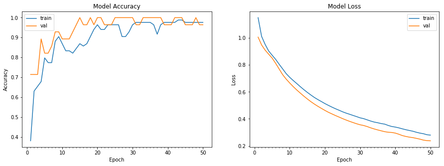

鸢尾花的分类
## 导包
import pandas as pd
import numpy as np
import matplotlib.pyplot as plt
import tensorflow as tf
from sklearn.model_selection import train_test_split
## 超参数
test_size=0.25
epochs=50
validation_split=0.25
dense1_neurons =64 #第一层神经元的数量
dense2_neurons =32 #第二层神经元的数量
1.提出问题
根据整理好的鸢尾花数据集，能够进行三种鸢尾花的分类。
2.数据的收集和整理
2.1 导入数据集
datasets_path = 'data/iris.data'
iris = pd.read_csv(datasets_path,header=None)
iris.columns =['sepel_length','sepel_width','petal_length','petal_width','species']
print(iris.sample(5))
sepel_length sepel_width petal_length petal_width species
87 6.3 2.3 4.4 1.3 Iris-versicolor
126 6.2 2.8 4.8 1.8 Iris-virginica
58 6.6 2.9 4.6 1.3 Iris-versicolor
141 6.9 3.1 5.1 2.3 Iris-virginica
109 7.2 3.6 6.1 2.5 Iris-virginica
2.2 将标签转化为one-hot编码
# 对species进行one-hot编码
one_hot_species = pd.get_dummies(iris['species'], prefix='species')
# 与原来的数据进行拼接
one_hot_data = pd.concat([iris,one_hot_species], axis=1)
# 删除原来的species列
one_hot_data = one_hot_data.drop('species', axis=1)
# 随机输出5行，查看效果
one_hot_data.sample(5)
| sepel_length | sepel_width | petal_length | petal_width | species_Iris-setosa | species_Iris-versicolor | species_Iris-virginica | |
|---|---|---|---|---|---|---|---|
| 35 | 5.0 | 3.2 | 1.2 | 0.2 | 1 | 0 | 0 |
| 125 | 7.2 | 3.2 | 6.0 | 1.8 | 0 | 0 | 1 |
| 131 | 7.9 | 3.8 | 6.4 | 2.0 | 0 | 0 | 1 |
| 138 | 6.0 | 3.0 | 4.8 | 1.8 | 0 | 0 | 1 |
| 59 | 5.2 | 2.7 | 3.9 | 1.4 | 0 | 1 | 0 |
2.3 分割特征和标签
# 提取特征，前4列为特征
features = one_hot_data.iloc[:,0:4]
print("\n=====显示前5行特征=====")
print(features.head())
=====显示前5行特征=====
sepel_length sepel_width petal_length petal_width
0 5.1 3.5 1.4 0.2
1 4.9 3.0 1.4 0.2
2 4.7 3.2 1.3 0.2
3 4.6 3.1 1.5 0.2
4 5.0 3.6 1.4 0.2
# 提取标签，后3列为标签
labels = one_hot_data.iloc[:,4:]
print("\n=====显示前5行标签=====")
print(labels.head())
=====显示前5行标签=====
species_Iris-setosa species_Iris-versicolor species_Iris-virginica
0 1 0 0
1 1 0 0
2 1 0 0
3 1 0 0
4 1 0 0
features = np.array(features)
labels = np.array(labels)
print("特征集的形状：",features.shape)
print("标签集的形状：",labels.shape)
特征集的形状： (150, 4)
标签集的形状： (150, 3)
2.4 分割训练集和测试集
# 拆分训练集和测试集
X_train,X_test,y_train,y_test = train_test_split(features,labels,test_size=test_size,random_state=52)
print("训练特征集的形状：" + str(X_train.shape))
print("训练标签集的形状：" + str(y_train.shape))
print("测试特征集的形状：" + str(X_test.shape))
print("测试标签集的形状：" + str(y_test.shape))
训练特征集的形状：(112, 4)
训练标签集的形状：(112, 3)
测试特征集的形状：(38, 4)
测试标签集的形状：(38, 3)
3.训练模型
3.1 搭建模型
# 搭建模型
model = tf.keras.Sequential()
model.add(tf.keras.layers.Dense(units=dense1_neurons,input_dim=4,activation='relu'))
model.add(tf.keras.layers.Dense(units=dense2_neurons,activation='relu'))
model.add(tf.keras.layers.Dense(units=3,activation="softmax"))
model.summary() # 查看模型结构
Model: "sequential_28"
_________________________________________________________________
Layer (type) Output Shape Param #
=================================================================
dense_76 (Dense) (None, 64) 320
_________________________________________________________________
dense_77 (Dense) (None, 32) 2080
_________________________________________________________________
dense_78 (Dense) (None, 3) 99
=================================================================
Total params: 2,499
Trainable params: 2,499
Non-trainable params: 0
_________________________________________________________________
3.2 编译模型
# 编译模型
model.compile(loss='categorical_crossentropy', optimizer='adam',metrics=['accuracy'])
3.3 训练模型
# 训练模型
history = model.fit(X_train,y_train,validation_split=validation_split,epochs=epochs)
Epoch 1/50
3/3 [==============================] - 0s 123ms/step - loss: 1.1504 - accuracy: 0.3810 - val_loss: 1.0061 - val_accuracy: 0.7143
Epoch 2/50
3/3 [==============================] - 0s 14ms/step - loss: 1.0114 - accuracy: 0.6310 - val_loss: 0.9479 - val_accuracy: 0.7143
Epoch 3/50
3/3 [==============================] - 0s 16ms/step - loss: 0.9521 - accuracy: 0.6548 - val_loss: 0.9095 - val_accuracy: 0.7143
Epoch 4/50
3/3 [==============================] - 0s 16ms/step - loss: 0.9035 - accuracy: 0.6786 - val_loss: 0.8797 - val_accuracy: 0.8929
Epoch 5/50
3/3 [==============================] - 0s 12ms/step - loss: 0.8718 - accuracy: 0.7976 - val_loss: 0.8503 - val_accuracy: 0.8214
Epoch 6/50
3/3 [==============================] - 0s 16ms/step - loss: 0.8409 - accuracy: 0.7738 - val_loss: 0.8114 - val_accuracy: 0.8214
Epoch 7/50
3/3 [==============================] - 0s 16ms/step - loss: 0.8045 - accuracy: 0.7738 - val_loss: 0.7690 - val_accuracy: 0.8571
Epoch 8/50
3/3 [==============================] - 0s 17ms/step - loss: 0.7700 - accuracy: 0.8810 - val_loss: 0.7273 - val_accuracy: 0.9286
Epoch 9/50
3/3 [==============================] - 0s 16ms/step - loss: 0.7349 - accuracy: 0.9048 - val_loss: 0.6943 - val_accuracy: 0.9286
Epoch 10/50
3/3 [==============================] - 0s 14ms/step - loss: 0.7077 - accuracy: 0.8690 - val_loss: 0.6658 - val_accuracy: 0.8929
Epoch 11/50
3/3 [==============================] - 0s 15ms/step - loss: 0.6842 - accuracy: 0.8333 - val_loss: 0.6390 - val_accuracy: 0.8929
Epoch 12/50
3/3 [==============================] - 0s 14ms/step - loss: 0.6619 - accuracy: 0.8333 - val_loss: 0.6141 - val_accuracy: 0.8929
Epoch 13/50
3/3 [==============================] - 0s 17ms/step - loss: 0.6388 - accuracy: 0.8214 - val_loss: 0.5912 - val_accuracy: 0.9286
Epoch 14/50
3/3 [==============================] - 0s 14ms/step - loss: 0.6169 - accuracy: 0.8452 - val_loss: 0.5687 - val_accuracy: 0.9643
Epoch 15/50
3/3 [==============================] - 0s 16ms/step - loss: 0.5964 - accuracy: 0.8690 - val_loss: 0.5477 - val_accuracy: 1.0000
Epoch 16/50
3/3 [==============================] - 0s 12ms/step - loss: 0.5772 - accuracy: 0.8571 - val_loss: 0.5278 - val_accuracy: 0.9643
Epoch 17/50
3/3 [==============================] - 0s 16ms/step - loss: 0.5588 - accuracy: 0.8690 - val_loss: 0.5098 - val_accuracy: 0.9643
Epoch 18/50
3/3 [==============================] - 0s 16ms/step - loss: 0.5430 - accuracy: 0.9048 - val_loss: 0.4932 - val_accuracy: 1.0000
Epoch 19/50
3/3 [==============================] - 0s 15ms/step - loss: 0.5284 - accuracy: 0.9405 - val_loss: 0.4778 - val_accuracy: 0.9643
Epoch 20/50
3/3 [==============================] - 0s 12ms/step - loss: 0.5134 - accuracy: 0.9643 - val_loss: 0.4628 - val_accuracy: 1.0000
Epoch 21/50
3/3 [==============================] - 0s 16ms/step - loss: 0.5000 - accuracy: 0.9405 - val_loss: 0.4489 - val_accuracy: 1.0000
Epoch 22/50
3/3 [==============================] - 0s 15ms/step - loss: 0.4872 - accuracy: 0.9405 - val_loss: 0.4368 - val_accuracy: 0.9643
Epoch 23/50
3/3 [==============================] - 0s 14ms/step - loss: 0.4752 - accuracy: 0.9643 - val_loss: 0.4248 - val_accuracy: 0.9643
Epoch 24/50
3/3 [==============================] - 0s 15ms/step - loss: 0.4643 - accuracy: 0.9643 - val_loss: 0.4136 - val_accuracy: 0.9643
Epoch 25/50
3/3 [==============================] - 0s 15ms/step - loss: 0.4528 - accuracy: 0.9643 - val_loss: 0.4023 - val_accuracy: 1.0000
Epoch 26/50
3/3 [==============================] - 0s 12ms/step - loss: 0.4429 - accuracy: 0.9643 - val_loss: 0.3917 - val_accuracy: 1.0000
Epoch 27/50
3/3 [==============================] - 0s 13ms/step - loss: 0.4344 - accuracy: 0.9048 - val_loss: 0.3818 - val_accuracy: 1.0000
Epoch 28/50
3/3 [==============================] - 0s 16ms/step - loss: 0.4255 - accuracy: 0.9048 - val_loss: 0.3727 - val_accuracy: 1.0000
Epoch 29/50
3/3 [==============================] - 0s 14ms/step - loss: 0.4169 - accuracy: 0.9286 - val_loss: 0.3639 - val_accuracy: 1.0000
Epoch 30/50
3/3 [==============================] - 0s 15ms/step - loss: 0.4077 - accuracy: 0.9643 - val_loss: 0.3563 - val_accuracy: 1.0000
Epoch 31/50
3/3 [==============================] - 0s 12ms/step - loss: 0.4018 - accuracy: 0.9762 - val_loss: 0.3510 - val_accuracy: 0.9643
Epoch 32/50
3/3 [==============================] - 0s 17ms/step - loss: 0.3930 - accuracy: 0.9762 - val_loss: 0.3432 - val_accuracy: 0.9643
Epoch 33/50
3/3 [==============================] - 0s 14ms/step - loss: 0.3840 - accuracy: 0.9762 - val_loss: 0.3337 - val_accuracy: 1.0000
Epoch 34/50
3/3 [==============================] - 0s 13ms/step - loss: 0.3765 - accuracy: 0.9762 - val_loss: 0.3254 - val_accuracy: 1.0000
Epoch 35/50
3/3 [==============================] - 0s 16ms/step - loss: 0.3714 - accuracy: 0.9762 - val_loss: 0.3183 - val_accuracy: 1.0000
Epoch 36/50
3/3 [==============================] - 0s 16ms/step - loss: 0.3653 - accuracy: 0.9643 - val_loss: 0.3116 - val_accuracy: 1.0000
Epoch 37/50
3/3 [==============================] - 0s 17ms/step - loss: 0.3610 - accuracy: 0.9167 - val_loss: 0.3051 - val_accuracy: 1.0000
Epoch 38/50
3/3 [==============================] - 0s 16ms/step - loss: 0.3513 - accuracy: 0.9643 - val_loss: 0.3010 - val_accuracy: 1.0000
Epoch 39/50
3/3 [==============================] - 0s 9ms/step - loss: 0.3436 - accuracy: 0.9762 - val_loss: 0.2994 - val_accuracy: 0.9643
Epoch 40/50
3/3 [==============================] - 0s 14ms/step - loss: 0.3393 - accuracy: 0.9762 - val_loss: 0.2947 - val_accuracy: 0.9643
Epoch 41/50
3/3 [==============================] - 0s 13ms/step - loss: 0.3334 - accuracy: 0.9762 - val_loss: 0.2863 - val_accuracy: 0.9643
Epoch 42/50
3/3 [==============================] - 0s 12ms/step - loss: 0.3263 - accuracy: 0.9762 - val_loss: 0.2764 - val_accuracy: 1.0000
Epoch 43/50
3/3 [==============================] - 0s 12ms/step - loss: 0.3197 - accuracy: 0.9881 - val_loss: 0.2698 - val_accuracy: 1.0000
Epoch 44/50
3/3 [==============================] - 0s 12ms/step - loss: 0.3140 - accuracy: 0.9881 - val_loss: 0.2647 - val_accuracy: 1.0000
Epoch 45/50
3/3 [==============================] - 0s 11ms/step - loss: 0.3085 - accuracy: 0.9762 - val_loss: 0.2610 - val_accuracy: 0.9643
Epoch 46/50
3/3 [==============================] - 0s 19ms/step - loss: 0.3008 - accuracy: 0.9762 - val_loss: 0.2557 - val_accuracy: 0.9643
Epoch 47/50
3/3 [==============================] - 0s 12ms/step - loss: 0.2946 - accuracy: 0.9762 - val_loss: 0.2498 - val_accuracy: 0.9643
Epoch 48/50
3/3 [==============================] - 0s 13ms/step - loss: 0.2900 - accuracy: 0.9762 - val_loss: 0.2427 - val_accuracy: 1.0000
Epoch 49/50
3/3 [==============================] - 0s 12ms/step - loss: 0.2825 - accuracy: 0.9762 - val_loss: 0.2388 - val_accuracy: 0.9643
Epoch 50/50
3/3 [==============================] - 0s 12ms/step - loss: 0.2797 - accuracy: 0.9762 - val_loss: 0.2375 - val_accuracy: 0.9643
4.评估模型
def plot_model_history(model_history):
'''
功能：根据history对象，绘制训练集和验证集上loss和acc的变化图
参数：history对象
来源：https://www.tensorflow.org/tutorials/keras/basic_classification?hl=zh-cn
'''
fig, axs = plt.subplots(1,2,figsize=(15,5))
# summarize history for accuracy
axs[0].plot(range(1,len(model_history.history['accuracy'])+1),model_history.history['accuracy'])
axs[0].plot(range(1,len(model_history.history['val_accuracy'])+1),model_history.history['val_accuracy'])
axs[0].set_title('Model Accuracy')
axs[0].set_ylabel('Accuracy')
axs[0].set_xlabel('Epoch')
axs[0].set_xticks(np.arange(1,len(model_history.history['accuracy'])+1),len(model_history.history['accuracy'])/10)
axs[0].legend(['train', 'val'], loc='best')
# summarize history for loss
axs[1].plot(range(1,len(model_history.history['loss'])+1),model_history.history['loss'])
axs[1].plot(range(1,len(model_history.history['val_loss'])+1),model_history.history['val_loss'])
axs[1].set_title('Model Loss')
axs[1].set_ylabel('Loss')
axs[1].set_xlabel('Epoch')
axs[1].set_xticks(np.arange(1,len(model_history.history['loss'])+1),len(model_history.history['loss'])/10)
axs[1].legend(['train', 'val'], loc='best')
plt.show()
plot_model_history(history)

# 使用测试集进行评估
model.evaluate(X_test,y_test)
2/2 [==============================] - 0s 2ms/step - loss: 0.3468 - accuracy: 0.9474
[0.3467755615711212, 0.9473684430122375]
5.使用模型
# 使用真实的样本进行预测
sample = np.array([7,5.5,6.5,3.9]).reshape(-1,4)
target = model.predict(np.array([[7,5.5,6.5,3.9]])).argmax()
if target == 0:
print("Iris-setosa")
elif target == 1:
print("Iris-versicolor")
else:
print("Iris-virginica")
Iris-virginica